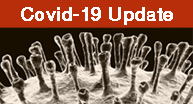

Covid-19 and the role of smoking: the protocol of the multicentric prospective study COSMO-IT (COvid19 and SMOking in ITaly).
Keywords:
COVID-19, lifestyle habits, prognosis, SARS-COV-2, smoking, tobacco, risk factorsAbstract
The emergency caused by Covid-19 pandemic raised interest in studying lifestyles and comorbidities as important determinants of poor Covid-19 prognosis. Data on tobacco smoking, alcohol consumption and obesity are still limited, while no data are available on the role of e-cigarettes and heated tobacco products (HTP). To clarify the role of tobacco smoking and other lifestyle habits on COVID-19 severity and progression, we designed a longitudinal observational study titled COvid19 and SMOking in ITaly (COSMO-IT). About 30 Italian hospitals in North, Centre and South of Italy joined the study. Its main aims are: 1) to quantify the role of tobacco smoking and smoking cessation on the severity and progression of COVID-19 in hospitalized patients; 2) to compare smoking prevalence and severity of the disease in relation to smoking in hospitalized COVID-19 patients versus patients treated at home; 3) to quantify the association between other lifestyle factors, such as e-cigarette and HTP use, alcohol and obesity and the risk of unfavourable COVID-19 outcomes. Socio-demographic, lifestyle and medical history information will be gathered for around 3000 hospitalized and 700-1000 home-isolated, laboratory-confirmed, COVID-19 patients. Given the current absence of a vaccine against SARS-COV-2 and the lack of a specific treatment for -COVID-19, prevention strategies are of extreme importance. This project, designed to highly contribute to the international scientific debate on the role of avoidable lifestyle habits on COVID-19 severity, will provide valuable epidemiological data in order to support important recommendations to prevent COVID-19 incidence, progression and mortality.
References
Remuzzi A, Remuzzi G. COVID-19 and Italy: what next? Lancet. 2020;395(10231):1225-1228. doi:10.1016/S0140-6736(20)30627-9
Guan WJ, Ni ZY, Hu Y et al. Clinical Characteristics of Coronavirus Disease 2019 in China. N Engl J Med. 2020 Apr 30; 382(18):1708-1720. doi: 10.1056/NEJMoa2002032
Zagà V, Gallus S, Gorini G, Cattaruzza MS. Why coronavirus is more deadly among men than among women? The smoking hypothesis. Tobaccology. 2020; 1:21-29
Palmieri L, Vanacore N, Donfrancesco C et al. Clinical Characteristics of Hospitalized Individuals Dying with COVID-19 by Age Group in Italy. J Gerontol A Biol Sci Med Sci. 2020 Jun 7;glaa146. doi: 10.1093/gerona/glaa146
Cattaruzza MS, Zagà V, Gallus S, D'Argenio P, Gorini G. Tobacco smoking and COVID-19 pandemic: old and new issues. A summary of the evidence from the scientific literature. Acta Biomed. 2020; 91(2):106-112. doi: 10.23750/abm.v91i2.9698
Gorini G, Clancy L, Fernandez E, Gallus S. Smoking history is an important risk factor for severe COVID-19. Blog Tob Control. 5 April 2020: https://blogs.bmj.com/tc/2020/04/05/smoking-history-is-an-important-risk-factor-for-severe-covid-19/
Reuters. Experts urge smokers and tobacco firms to quit for COVID-19. 6 April 2020: https://uk.reuters.com/article/ushealth-coronavirus-tobacco/experts-urge-smokers-and-tobacco-firms-to-quit-for-covid-19-idUKKBN21O1KG
Zhang JJ, Dong X, Cao YY et al. Clinical characteristics of 140 patients infected with SARS-CoV-2 in Wuhan, China. Allergy 2020; 75:1730-41. doi: 10.1111/all.14238
Pacifici R. Covid-19: nei fumatori il rischio di finire in terapia intensiva è più del doppio. Istituto Superiore di Sanità, 2020: https://www.iss.it/web/guest/primo-piano/-/asset_publisher/o4oGR9qmvUz9/content/id/5294087
Simons D, Shahab L, Brown J, Perski O. The association of smoking status with SARS-CoV-2 infection, hospitalization and mortality from COVID-19: a living rapid evidence review. (version 4). Jun 11, 2020; Qeios ID: UJR2AW.4; https://doi.org/10.32388/UJR2AW.5.
Brake SJ, Barnsley K, Lu W et al. Smoking Upregulates Angiotensin-Converting Enzyme-2 Receptor: A Potential Adhesion Site for Novel Coronavirus SARS-CoV-2 (Covid-19). J Clin Med. 2020;9(3):841. doi: 10.3390/jcm9030841
Lighter J, Phillips M, Hochman S et al. Obesity in patients younger than 60 years is a risk factor for Covid-19 hospital admission. Clin Infect Dis. 2020; 71(15):896-897. doi: 10.1093/cid/ciaa415
Simonnet A, ChetbounM, Poissy J et al. High prevalence of obesity in severe acute respiratory syndrome coronavirus-2 (SARS-CoV-2) requiring invasive mechanical ventilation. Obesity. 2020; 28(7):1195-1199. doi: 10.1002/oby.22831
Riedel F, Goessler UR, Hormann K. Alcohol-related diseases of the mouth and throat. Dig Dis. 2005;23(3-4):195-203. doi: 10.1159/000090166
Simou E, Britton J, Leonardi-Bee J. Alcohol and the risk of pneumonia: a systematic review and meta-analysis. BMJ Open. 2018 Aug 22;8(8):e022344. doi: 10.1136/bmjopen-2018-022344

Downloads
Published
Issue
Section
License
This is an Open Access article distributed under the terms of the Creative Commons Attribution License (https://creativecommons.org/licenses/by-nc/4.0) which permits unrestricted use, distribution, and reproduction in any medium, provided the original work is properly cited.
Transfer of Copyright and Permission to Reproduce Parts of Published Papers.
Authors retain the copyright for their published work. No formal permission will be required to reproduce parts (tables or illustrations) of published papers, provided the source is quoted appropriately and reproduction has no commercial intent. Reproductions with commercial intent will require written permission and payment of royalties.
How to Cite